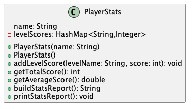

Lab Assignment 04
Today’s lab introduces your first Java objects. You will practice creating a class, adding fields and methods, and using objects from another class. These ideas are the foundation for everything we do next with constructors, private fields, and bigger object-oriented programs.
⚡ Instructions
- Practice: Start with the in-class guided practice below to build your first object step by step.
- Graded work: Use the provided Lab starter ZIP to complete the required tasks and submit your work: Player.java and Main.java
Lab ZIP File
- Download starter zip file: Lab04.zip and import it into Eclipse as Existing Project (see Lab02 for details).
-
What to submit on Gradescope:
Upload your completed
Player.javaandApp.javafiles to the Lab 04 assignment. The Gradescope link is available on Moodle.
01. First Object Practice
🛠 Instructions:
Create your first Java class called Block, then create an object and call its methods
from a Main class.
You will practice:
- creating a class
- adding fields
- writing methods
- creating an object
- calling methods
🧩 Steps
1️⃣ Create the Block class
Create a new class named Block.
Add these two fields:
String typeint hardness
2️⃣ Add a void method
Add a method named displayInfo that prints a message with the following information:
"Block Type: " + type
"Hardness: " + hardness
Add a method named breakBlock that prints a message when the block is broken.
Example output:
Diamond Ore block was broken!3️⃣ Add a return method
Add a method named getBlockType that returns the block's type.
4️⃣ Add a method with arguments
Add a method named mine that takes:
String toolint toolLevel
For now, have the method print which tool is being used and its level.
5️⃣ Create a Main class
Create a separate class named Main with the main method.
Inside main, create one Block object.
6️⃣ Assign field values
Give your object values such as:
type = "Diamond Ore"hardness = 5
7️⃣ Call all three methods
From Main, call:
- the
voidmethod - the
returnmethod - the method with arguments
Print any returned value to the console so you can see what happens.
✅ Checkpoint
- There are no red ❌ errors in the editor.
- You created a
Blockclass and aMainclass. - Your
Blockclass has two fields. - Your
Blockclass has three methods. - Your
Mainclass creates aBlockobject. - You successfully call all three methods.
- You see output in the console.
💡 Need a hint?
Method shapes:
public void methodName() {
}public String methodName() {
return "something";
}public void methodName(String text, int number) {
}Creating an object:
Block block = new Block();Calling methods:
block.breakBlock();
String name = block.getBlockType();
System.out.println(name);
block.mine("Iron Pickaxe", 3);02. Player Submission
🛠 Instructions:
In this part of the lab you will implement the Player class and complete
the practice code in Main.
Open the provided project and look for comments marked:
// TODO.
Each TODO describes a small step you must complete.
You will practice:
- Creating fields for an object
- Writing constructors
- Implementing methods with parameters
- Returning values from methods
- Calling methods from a client program (
Main)
Files you will modify and submit:
Player.java– implement the class and its methodsMain.java– create objects and call the methods
⚠️ Gradescope Note
For this lab you will temporarily create 2 constructors. However, the autograder only accept one constructor.
After you finish testing locally in Eclipse, please follow these steps before submitting:
-
In
Player.java
Comment out the default constructor. Do not delete it.
// Comment this out before submitting to Gradescope
/*
public Player() {
name = "Unknown";
health = 0;
}
*/
-
In
Main.java
Comment lines for TODO 1 and TODO 2.
// Player player1 = new Player(); // used for testing only
// System.out.println(player1.getStatus()); used for testing only
03. PlayerStats Practice
🛠 Instructions
In this practice activity, you will create your own class PlayerStats to model
a game player’s stats: their name and scores from different Minecraft areas
such as the Overworld, Nether, and End.
You will then use the provided PlayerStatsMain class inside the Lab04 project to test your work.
Resources: Understanding Fields and Classes
This practice is designed to help you get comfortable with:
- Defining your own classes and fields
- Writing constructors
- Adding methods that update and compute values
- Working with a
HashMapinside a class - Building and returning a formatted
String
🎮 What are we building?
Each PlayerStats object represents one player and stores:
- the player’s name
- a collection of level scores
Example score entries might look like:
"Overworld" → 1200"Nether" → 3000"End" → 5000
Your class should be able to:
- store scores for different areas
- compute the total score
- compute the average score
- build a one-line stats report
1️⃣ Create the PlayerStats class

- Open
PlayerStatsMainand uncomment the first line:PlayerStats mineMaster = new PlayerStats("MineMaster"); -
Eclipse should show an error because the
PlayerStatsclass does not exist yet. Use the quick fix to create the class. -
Add class-level Javadoc and your name in the
@authorline.
💡 Need a hint?
package lab;
/**
* Represents the stats of a Minecraft player.
* Stores the player's name and their scores from different levels.
*
* @author Your Name Here
*/
public class PlayerStats {
// TODO: fields, constructors, and methods go here
}2️⃣ Add the fields
Inside PlayerStats, add two fields:
nameto store the player’s namelevelScoresto store area names and scores using aHashMap
Your levelScores field should map:
- key → area name
- value → score
💡 Hint
Initializing levelScores at the field means every new
PlayerStats object starts with an empty map that is ready to use.
HashMap<String, Integer> levelScores = new HashMap<>();3️⃣ Add two constructors
Write:
- a default constructor
- a constructor with a name parameter
The default constructor should give the player a simple default name.
💡 Hint
public PlayerStats() {
// default constructor
}
public PlayerStats(String name) {
// constructor that sets the player's name
}
Use this.name = name; in the constructor with a parameter.
Do not reassign levelScores inside the constructors.
4️⃣ Add a method to record a score
Write a method named addLevelScore that stores or updates the score
for a given area.
Example idea:
- calling
addLevelScore("Overworld", 1000)stores that score - calling it again with the same level name updates the value
💡 Hint
public void addLevelScore(String levelName, int score) {
// use the HashMap put method
}5️⃣ Compute total and average score
Add two methods to your PlayerStats class:
-
getTotalScore()→ returns the sum of all level scores. -
getAverageScore()→ returns the average score across all levels.
Both methods should:
- take no parameters
- read data from the
levelScoresmap - return the computed value
💡 Hint: Method signatures
public int getTotalScore() {
// TODO: loop through levelScores and add all values
}
public double getAverageScore() {
// TODO: compute the average score across all levels
}
💡 Hint for the logic
- You will likely need a loop that goes through all levels in
levelScores. - Use
levelScores.get(level)to access each score. - If the map has no scores yet, returning
0.0for the average is fine.
💡 Hint for total
Loop through the map and add up each score.
💡 Hint for average
Check whether the map is empty first if (levelScores.isEmpty()) return 0.0;. If not, divide the total score by the number of levels.
Recall that the keys are unique and if you know the size of the map, you will have the number of levels.
6️⃣ Build a stats report
Write a method that builds and returns a single-line report describing the player's stats.
The method should:
- be named
buildStatsReport() - take no parameters
- return a
String
The report should include:
- the player's name
- each level and its score
- the total score
- the average score
If there are no scores yet, return something like:
Player1: (no scores yet)If scores exist, return a report similar to:
Steve: Overworld - 1200 Nether - 3000 End - 5000 - Total: 9200 - Average: 3066.6666666666665💡 Hint: Method signature
public String buildStatsReport() {
// TODO: build and return a formatted stats report string
}
💡 Hint for the logic
- Start with the player's name.
- Loop through
levelScoresand append each level and score. - Call
getTotalScore()andgetAverageScore(). - Build the string step by step.
💡 Hint for building the String
You can start with one String variable and keep adding to it.
String report = name + ":";
// TODO: add more parts to the report
return report;
You can attach more text using +=.
report += " - Total: " + getTotalScore();
report += " - Average: " + getAverageScore();Note: The order of levels may vary because HashMap does not guarantee order.
7️⃣ Add a print helper
Write a method named printStatsReport that prints the result of
buildStatsReport().
💡 Hint: Method signature
public void printStatsReport() {
// TODO: call buildStatsReport() and print the result
String report = buildStatsReport();
System.out.println(report);
}8️⃣ Test it in PlayerStatsMain
Open PlayerStatsMain.java, uncomment the provided code, and run it.
You should see output similar to this:
MineMaster: VillageRaid - 2200 Nether - 3000 Overworld - 1200 End - 5000 - Total: 11400 - Average: 2850.0
Player1: Nether - 800 Overworld - 400 - Total: 1200 - Average: 600.0✅ Checkpoint
- There are no red ❌ errors in Eclipse.
- Your
PlayerStatsclass has fields, constructors, and methods. PlayerStatsMainruns successfully.- Your report string includes the player name, level scores, total, and average.